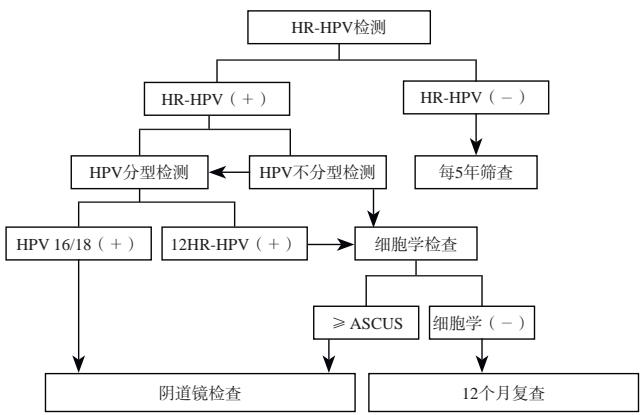
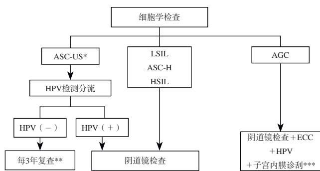
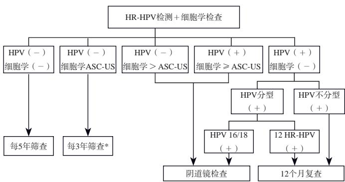
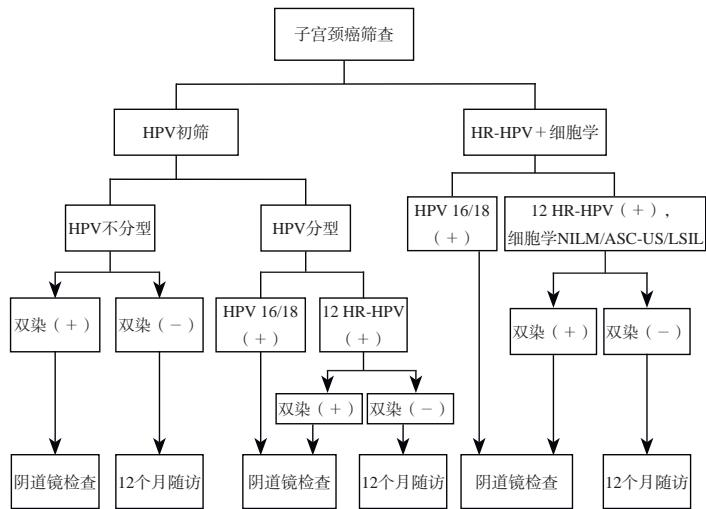

1Background & Goal
- Goal: standardize triage of abnormal results — avoid overdiagnosis AND missed diagnosis.
- Burden: 150,700 new & 55,700 deaths in China 2022 (22.7%/16.0% of world).
- Context: builds on Screening Guideline (I); WHO elimination strategy.
2Triage Methods Overview
1
Cytology — main triage for HR-HPV(+) primary screening.
1类
2
p16/Ki-67 dual stain — HPV(+) no-genotype / 12 HR-HPV; co-test NILM/ASC-US/LSIL.
2A
3
Methylation — triage of 12 HR-HPV(+) to reduce colposcopy referrals.
2B
4
HPV integration — HR-HPV(+) triage; positive → colposcopy.
2B
- Reagents: all new methods need authoritative approval & validated indications.
- Others: extended genotyping / viral load — more evidence needed.
76.6%
HPV16 in SCC
7.9%
HPV18 in SCC
3.2%
HPV31 in SCC
35.1%
HPV16 in adeno
30.6%
HPV18 in adeno
74.5%
hrHPV in adeno
52/58/16
CIN1 common types
16/58/52/33/31
CIN2/3+ types
15.0%
HPV prevalence ≥20 y
- Why triage: HPV(+) mostly transient — triage spares low-risk women from colposcopy.
- Risk principle: same risk, same management (ASCCP).
- Dual stain scope: HPV(+) no-genotype / 12 HR-HPV; co-test NILM/ASC-US/LSIL.
- Methylation mechanism: CpG promoter methylation silences suppressors — triage signal.
- Integration mechanism: HPV DNA integration into host genome — risk stratifier.
- Reagent gate: authoritative approval + clinically validated indications for each method.
Refined triage = precision management: fewer unnecessary colposcopies, fewer missed lesions; cytology remains the workhorse, molecular methods add precision.
3Management Flowcharts (Fig 1–4)

Fig 1 · HPV(+) primary screening
No-genotype → cytology triage or genotyping · 16/18+ → colposcopy · 12 HR-HPV+ → cytology triage.

Fig 2 · Cytology(+) primary screening
ASC-US/LSIL → HPV-based triage · ASC-H/HSIL/AGC → colposcopy · SCC/adeno → immediate referral.

Fig 3 · Co-testing abnormal
Risk-based per ASCCP 2019: combine HPV & cytology strata to decide colposcopy vs follow-up.

Fig 4 · p16/Ki-67 dual stain
DS(+) → colposcopy · DS(−) → 1-yr follow-up (HR-HPV no-genotype / 12 HR-HPV; co-test NILM/ASC-US/LSIL).
Four management flows cover HPV-primary, cytology-primary, co-testing and dual-stain triage pathways.
4Methylation Triage (2B) & HPV Integration
12 HR-HPV+
methylation triage target
colposcopy ↓
referral reduction
2B
recommendation class
- Methylation: CpG-island promoter hypermethylation silences tumor suppressors — early lesion signal for triage.
- Reagents: approved & clinically validated for 12 HR-HPV(+) triage.
- HPV integration: integration(+) → high-risk, full colposcopy & histology; (−) → 1-yr follow-up.